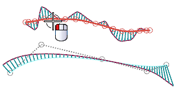
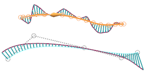
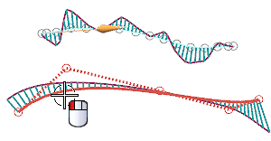
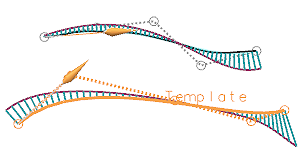
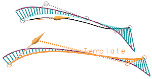
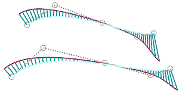

选择顶部样条的左侧。

一个临时的箭头出现在要成形曲线的起点处，它的方向和位置是由您选择曲线时选择的那一半决定，您可以通过取消选择曲线(按住 Shift 再选择)，然后在相反的一侧重新选择来更改样条起始位置。

在对话框中，点击模板样条 。
选择底部样条的左侧作为模板样条。

一个临时的箭头出现在样条起始位置，第一条样条的形状将更改以匹配模板曲线的阶次和段数，且对话框中的滑动条位于最左端。

随着滑动条向右滑动，样条变得更接近模板曲线的形状。
缓慢将滑动条向右滑动，并查看样条的变化。

可以使用偏差度量来查看原始曲线和更改曲线之间的偏差。
选择偏差度量后，将出现偏差度量对话框以便您可以做出更改 ，如果您在同时编辑多条曲线，当偏差度量对话框出现时，输入设置将应用到所有选定的要成形的曲线。
在按模板成形对话框中点击确定。

关闭部件。